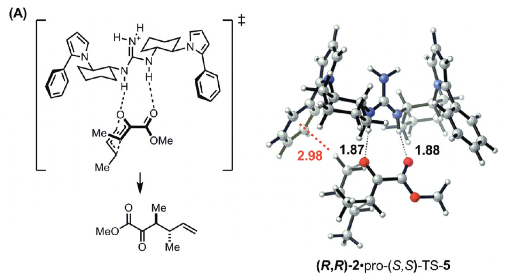
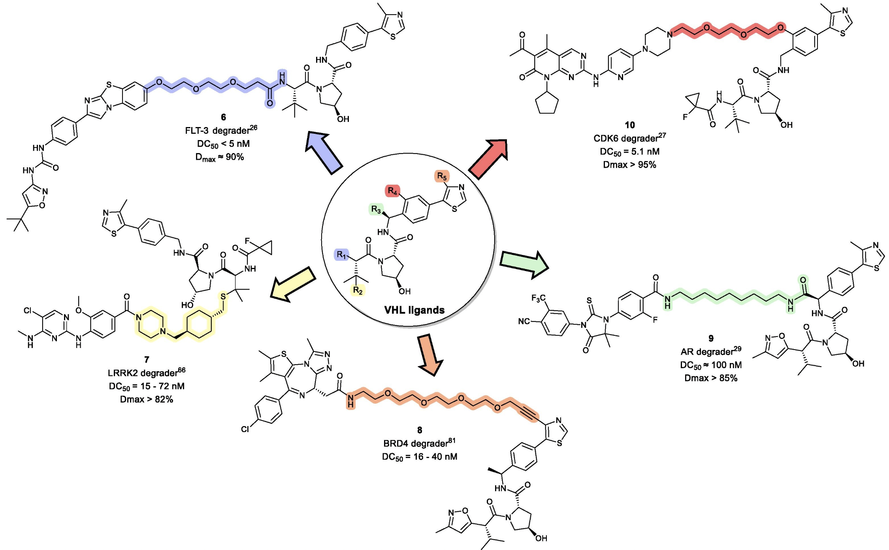
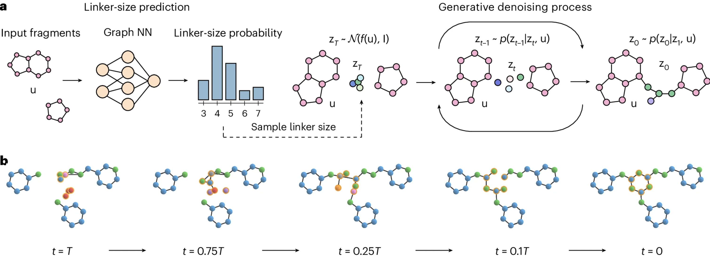
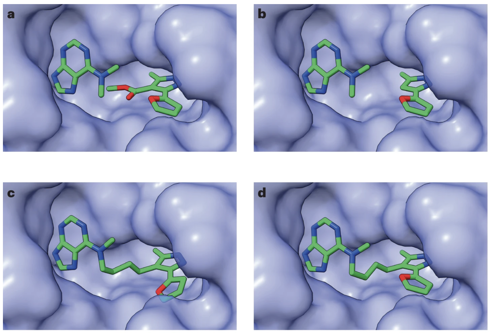

Update: As of October 2024, you can now run DiffLinker calculations through Rowan, my computational chemistry startup. Read more about this in our newsletter!
Much molecular design today can be boiled down to “put the right functional groups in exactly the right places.” In catalysis, proper positioning of functional groups to complement developing charge or engage in other stabilizing non-covalent interactions with the transition state can lead to vast rate accelerations. A classic demonstration of this is Uyeda and Jacobsen’s enantioselective Claisen rearrangement, where a simple catalyst presents a guanidinium ion to stabilize an anionic region and an electron-rich arene to stabilize a cationic region. Together, these interactions lead to high enantioselectivity and a 250-fold rate increase over the background reaction.

I freely admit this choice of example is biased, but this is a great paper.
While putting the right functional groups in the right positions might sound easy, the underlying interactions are often exquisitely sensitive to distance, which makes finding the right molecular scaffold very challenging. Jeremy Knowles put this nicely in his 1991 perspective on enzyme catalysis:
Although it is too early to generalize, it is evident that in this case [triose phosphate isomerase] at least, the positioning of functionality at the active site of the enzyme needs to be quite precise if full catalytic potency is to be realized… The good news for catalyst engineers is that proper placement of appropriate groups in the right environment seems to be enough. The not-so-good news is that this placement must be very precise.
Proper positioning of various groups isn’t just a problem in catalysis—it’s also very important in drug design. Lots of topics in medicinal chemistry essentially boil down to a variant of the positioning problem:
Recent years have seen an explosion in the number of arene bioisosteres, i.e. “ways to connect two groups the same distance apart as an arene would without using any aromatic rings.” This is nice because you can use these bioisosteres to e.g. tune biophysical properties, like lipophilicity, solubility, and membrane permeability, while ideally not affecting the actual conformation of the molecule too much. Here’s a graphic from Chris Swain showing some options for replacing a 1,4-disubstituted arene:
Taken from this page.
(There's lots of work on this; see also the Baran Lab's great overview of bioisosteres.)
“Scaffold hopping” generally means switching the core of a molecule while preserving key interactions and substituents (although the term is a little vague). Scaffold hops often look for new structures that don’t suffer from the ADME/toxicity liabilities of the original structure, which necessitates finding a new core that positions substituents in the same way. Here's a nice example of a scaffold hop in a tyrosine kinase inhibitor, from a review by Hongmao Sun and co-workers:
(This is Figure 8 in the reference.)
Linker design has become incredibly important for PROTACs and other heterobifunctional molecules, as choosing a good linker is often key to drug efficacy (e.g.). Unfortunately there are a vast variety of potential linkers, and it’s far from obvious to figure out which one will best balance, affinity, bioavailability, stability, and other properties:

Taken from this review.
One of the toughest parts of fragment-based drug design is finding the right way to connect fragments which bind to different parts of the desired pocket. Here’s what Philine Kirsch and co-workers have to say about this:
Finding the right linker motif, which orients the individual fragment units in the favourable geometry in relation to each other without introducing too much flexibility whilst maintaining the binding poses of both fragments, can be very challenging. If successful, the combination of two fragments with rather low affinity could result in significantly higher affinity and has the potential to result in “superadditive” contributions of both binding motifs. The challenge in fragment linking is the exploration of the binding mode of both fragments and the identification of an optimal linker. Only in this case, the overall reduced so-called rigid body entropy translates into synergistically-improved affinity.
What’s hard about all these positioning problems is that finding a molecule that orients substituents in a given way is incredibly non-obvious: molecules are inherently discrete and atomic, making it hard to change a distance or angle by a precise percent. You can have two carbon atoms between your substituents, or you can have three carbon atoms, but you can’t have 2.5 carbon atoms. This makes prospective design very challenging: I can model my protein’s active site and figure out that I want a an ortho-pyridyl substituent and a tetrazole 8 Å apart at a 30º angle, but working backwards to an actual scaffold almost always requires a lot of trial and error.
A recent paper from Ilia Igashov and co-workers sets out to solve exactly this “inverse design” problem: given two substituents, can we use ML to find a linker that connects them in the desired orientation? Their solution is DiffLinker, a diffusion-based method that takes separate atomic fragments and generates a linker that connects them.

There’s been other work in this area, but the DiffLinker authors argue that their model stands out in a few ways. DiffLinker generally produces more synthetically accessible and drug-like molecules than competitor methods, although the relative ranking of models does change significantly from benchmark to benchmark. Also, they’re not limited to joining pairs of molecule structures: DiffLinker can perform “one-shot generation of the linker between any arbitrary number of fragments,” which lets them vastly outperform other models when linking three or more fragments.
For cases where fragments must be joined in a protein pocket, the authors train a pocket-conditioned model, and show that this model results in many fewer clashes than an unconstrained model. They can use this model to recapitulate known drug structures, which they demonstrate with a known HSP90 inhibitor derived from molecular fragments. (It’s worth noting that the authors got the desired inhibitor structure only 3 times out of 1000 DiffLinker predictions.) They also show that their protein-conditioned model produces molecules that have good binding affinity as assessed by docking (GNINA/Vina), with the huge caveat that docking scores are notoriously inaccurate.

a is the experimental fragments, b is the input to DiffLinker, c is the experimental inhibitor, and d is the DiffLinker-generated inhibitor. Not bad!
There’s still plenty of work that needs to be done here: for instance, the authors readily acknowledge that PROTACs are still too challenging:
While DiffLinker effectively suggests diverse and valid chemical structures in tasks like fragment linking and scaffold hopping, we have observed that generating relevant linkers for PROTAC-like molecules poses a greater challenge. The main difference between these problems lies on the linker length and the distance between the input fragments. While the average linker size in our training sets is around 8 atoms (5 for ZINC, 10 for GEOM, 10 for Pockets), a typical linker in a PROTAC varies between 12 and 20 atoms. It means that the distribution of linkers in PROTACs has different characteristics compared to the distributions of linkers provided in our training sets. Therefore, to improve the performance of DiffLinker in PROTAC design, one may consider retraining the model using more suitable PROTAC data.
DiffLinker is open-source and comes with pre-trained models, so I played around with it a bit myself to see how well it worked. I sketched out a classic meta-terphenyl scaffold, deleted the central phenyl ring, and then asked DiffLinker to connect the now-separated phenyl rings. I was hoping that DiffLinker would come up with one of Enamine’s cool suggestions for meta-arene bioisosteres, but in all five cases I just got back some variant on a benzene ring… which isn’t surprising in hindsight.
DiffLinker also doesn't output hydrogens, which is a little annoying.
Although I don’t think this version of DiffLinker is going to replace humans at any of the tasks I talked about above, this still seems like a pretty cool direction for generative chemical ML. I’m excited to see future versions of methods like DiffLinker that are able to generate predictions conditioned on other molecular properties to allow for guided exploration of molecular space. (For instance, it would have been nice to request fragments that were three-dimensional above, so as to avoid getting boring benzenes back.)
I also suspect that DiffLinker, like other generative chemical models, will increase the demand for accurate physics-based methods for refining and validating the output predictions. DiffLinker’s grasp of potential energy surfaces is presumably worse than DFT or other dedicated ML potentials, and a hybrid workflow where DiffLinker generates structures and a higher-quality method optimizes and scores them will probably be much more accurate than just DiffLinker alone. Generative AI is having a moment right now, but for better or worse I think “classic” molecular simulation is here to stay too.
Pure mathematics has all sorts of unexpected connections to other fields, and chemistry is no exception. One example of this is group theory: while I never delved deeply enough into math to actually study group theory as its own field, I've had to learn how to assign point groups to three-dimensional objects for several inorganic chemistry classes. This process, demonstrated below for water, basically entails finding all of the possible symmetry operations for a given molecule:
Finding the point group of water.
This might seem arcane but becomes quite important in several contexts. In computational chemistry, proper consideration of point groups and their corresponding symmetry numbers is needed to handle entropic effects correctly. Dan Singleton makes this point forcefully in his 2015 study of the Baylis–Hillman reaction (SI pp. S24–S25):
For an entropy calculation to be properly compared with experimental observations, it should allow for a
series of entropy effects that are not included in the entropies calculated from frequencies normally supplied
by electronic structure calculations. This includes allowance for symmetry numbers and the effects of
mixing of structures on entropy. The corrections are usually simple yet they are rarely done in computational
mechanistic studies. A rationalization of this is that the effects are small and often make no difference for
the results of greatest interest in papers. However, the effects can at times be quite large (see for example
Seal, P.; Papajak, E.; Truhlar, D. G. J. Phys. Chem. Lett.2012, 3, 264-271). Judging by papers where the
consideration of symmetry numbers and entropy of mixing would make a difference but is ignored (for one
example, see J. Chin. Chem. Soc.2001, 48, 193-200), the ideas are not as widely recognized as needed.
Why don't most people take symmetry into account? One reason is that while it's pretty easy to find the point group of a molecule by inspection, it's much harder to figure out how to do it programmatically. I ran into this issue writing code for Rowan, and was really pleased to find libmsym, a package that automatically finds the point group for a given molecule. (Here's the paper describing libmsym.) We've had great results using this library for Rowan's thermochemistry module.
Unfortunately, libmsym is now nine years old and we've also had problems with the code: in particular, I recently upgraded from an old Intel MacBook to a new M3 MacBook Pro, and there aren't any prebuild Apple Silicon-compatible wheels for libmsym on Pypi! Since this is an issue which other people have also faced with libmsym, and neither the original author nor the listed maintainer have responded to my emails, I decided to just fork the repository and fix this issue myself.
It took a bit more work than I was expecting (I ended up completely restructuring the package, rewriting all the CMake files, and moving the Python build to scikit-build-core), but I'm happy to share the final product, pymsym. pymsym should be compatible with any modern Linux or Mac architecture (thanks to cibuildwheel) and can be installed from Pypi. Simply run pip install pymsym.
All the original libmsym code is there, and I've also added an additional high-level Python API for quickly predicting point groups and symmetry numbers:
Apologies for the long hiatus: we've had some health issues in the family, and startup life has been particularly overwhelming. With any luck, I'll be able to return to a more regular posting frequency soon.
What’s the right relationship between theory, computation, and experiment? Much has been written on this. In this piece, I want to put forward an answer that I think is underrated in the life sciences—what I call the “SolidWorks model” of simulation.
For the unfamiliar, SolidWorks is a program which allows engineers to design objects in the computer: the user can create a 3D model of their device, figure out the measurements that allow the parts to fit together in the desired way, and then go into the lab and actually build everything. (I’m not a SolidWorks power user, but I spent a semester messing around with it in high school and I’ve been thinking back on this recently.)
A screenshot of SolidWorks.
What are the distinctive features of SolidWorks?
SolidWorks doesn’t predict overall success. If you’re designing a new gearbox in SolidWorks, you can check that the parts will fit together, but you don’t know if it will run efficiently or not. Modeling is not supposed to replace actually building and testing the part.
SolidWorks can be used by normal engineers, not dedicated computer experts. It’s quick and easy to model things, so modeling becomes a part of the regular engineering/design workflow. You can model a part, make it, adjust the model, make it again, and so on and so forth.
SolidWorks assists human intuition instead of trying to replace it. SolidWorks only draws what you tell it to, which means all the ideas still come from humans—to the extent that SolidWorks increases productivity, it does so by helping people understand what they’re working on more clearly. This comports with Richard Hamming’s idea that “the purpose of computing is insight, not numbers.”
Astute readers will notice differences from how simulations in the life sciences are typically conducted. It’s rare in chemistry or biology to have computations and experiments performed in the same research group, let alone by the same person—but this is crucial to SolidWorks-style simulation, where experimental scientists must quickly gain insight from their computations. If someone from a different team has to get around to answering their request or a job takes overnight to run, the experimental scientist will move on and modeling will be excluded from the design/build/test cycle.
SolidWorks-style computation is also prospective, not retrospective. In other words, the goal of the simulation is to generate subsequent experimental hits, not figures for publication, meaning that successful computational studies might never even be reported. This is different from the DFT section of the average organic chemistry paper, which is typically performed by a different team after all experimental results are complete. This isn’t bad, but ex post studies are different from actually using computations ex ante to design molecules.
I don’t mean to suggest that the SolidWorks paradigm is objectively correct: there are many ways in which theory, computation, and experiment can usefully interact, and I think it’s great that there are scientists using careful ex post computations to interpret perplexing experimental results or running massive virtual screens to design new molecules entirely in silico. I myself have worked on plenty of projects like this and hope to conduct more in the future.
But I do think that SolidWorks-style computation is pretty underrated today. There are few computational tools that non-experts can really use, and the average experimental scientists might not interact with computation even once in an average week (except perhaps when meeting with someone from a different lab or team). Even when experimentalists have the technical skills to run calculations, the friction involved in connecting to a computing cluster, generating input files, monitoring jobs, etc often makes it impractical to really run calculations and experiments in tandem.
In fact, I’d argue that the most useful predictive computational tool for organic chemists has probably been the ChemDraw “Predict NMR” button. The predictions are laughably crude by today’s standards, but ChemDraw NMR has a few key advantages: (1) you don’t have to program anything or look at a terminal window to use it, (2) there aren’t any options for end users to mess around with, so you can’t do anything wrong, and (3) it runs instantly from a software package everyone already has, so it fits right into your workflow. These factors are collectively more important than accuracy—ChemDraw NMR is accurate enough to be useful, and far more convenient than fancier approaches.
A screenshot of ChemDraw's NMR prediction widget.
This seems like a scenario where publication pressure leads to misaligned incentives. Scientific publications emphasize novelty, accuracy, and performance, not pragmatic considerations like “how easy is it to run this software in the middle of the workday” or “how confusing are the parameters to understand.” And for pioneering computational workflows that ought not to be run without a deep understanding of the science, that’s probably appropriate. But pragmatic considerations matter for casual users.
If it’s not obvious by now, one of our big visions for Rowan is “SolidWorks for organic chemistry”—to the extent that there are people who are designing and creating new molecules, we think that it’s important that they are able to think intelligently about the molecules that they’re designing. This means making software that can deliver actionable insights while being fast and simple enough for experimentalists to use. While this is a massive project, it’s not impossibly large, and we’re optimistic that Rowan can quickly become helpful to experimental chemists. If you think this vision is exciting and have ideas for how we can bring it to life, let us know!
“POC has evolved in many directions and its concepts are widely used, e.g., in host-guest chem, org syn, materials sci, drug discovery.” - Bill Jorgensen
“There is still a lot of absolutely gorgeous classical phys org done with organometallic and enzymatic reactions. The molecules have changed, the ideas are the same.” - Dan Singleton
“It makes no sense. Looking at orbitals, measuring KIE, studying mechanisms, all traditional PhysOrgChem. And ML in OrgChem is nothing more than Curtin-Hammett on steroids.” - Sebastian Kozuch
“Hard core classical phys-org maybe, but structure-activity relationships are alive and well across all chemistry disciplines. These have their origin in phys-org and use so many fundamental principles I learned as a PhD student studying carbocation and free radical reactions.” - @RacerPolyLab
“I've attend 10 Phys Org GRC meetings since 1999 & chaired 2015. I'm OK with ‘traditional phys. org. chemistry’ being barely practiced. It was dying–2001 saw 79 attendees, then the area morphed into phys. org. of organometallics, supramolecular, biomolecules. Fields evolve or die.” - Michael Haley
(There are plenty more responses; if I didn’t list yours, sorry!)
For the most part, I agree with these responses. Physical organic thinking has permeated organic chemistry and adjacent fields: George Whitesides has probably the best piece on this topic, in which he argues that the essence of physical organic chemistry is “a general, and remarkably versatile, method for tackling complex problems,” not anything about chemistry per se, and consequently that the physical organic mindset can be applied to problems in all manner of fields. Viewed from this angle, we might say that physical organic chemistry hasn’t disappeared at all—instead, it’s become so commonplace that we forget to acknowledge it as distinctive at all.
Looking through the organic chemistry curriculum, too, suggests that physical organic chemistry is here to stay. Lots of the ideas that we teach to undergraduates, like molecular orbital theory and structure–activity relationships, were once distinctively the domain of physical organic chemists. Textbooks from before the apotheosis of physical organic chemistry (I have an old copy of Fieser & Fieser, for instance) are structured in a completely different way, not by mechanism but by functional group, while today many undergraduate organic classes discuss SN1/SN2 mechanisms in their first semester.
So, was I entirely wrong to claim that traditional physical organic chemistry is a dying art? I don’t think so. Despite all the successes of physical organic chemistry, it seems to me that something has been lost between the time of the norbornyl cation controversy and today. The sorts of elegant kinetic experimentation and argumentation that Winstein and others employed in their papers are now rare: take, for instance, this famous paper distinguishing between contact ion pairs and solvent-separated ion pairs. How many scientists today still do experiments like this? There are certainly names that come to mind, but from where I sit it seems to be an increasingly niche skillset.
I don’t want to fall into the trap of idolizing the past for no reason; there are plenty of techniques which have been forgotten by chemistry because there are better ways of doing the same thing today. Chemists used to estimate molecular weight by dissolving a known mass of sample and measuring the boiling point elevation induced. Now we have mass spectrometry, so nobody uses the boiling point method any more, and I don’t see this as a great tragedy.
But kinetics, and more generally the sort of careful physical organic chemistry practiced by participants in the norbornyl cation debate, doesn’t seem to have such a simple replacement. Computation is the most obvious candidate, but we’re still a long way away from being able to predict mechanisms accurately in silico; in mechanistic chemistry, experiments still reign supreme. Kinetic isotope effects are much easier to measure than they were back in Winstein’s day, but they’re hardly routine experiments (and easy to get wrong). The rigor and precision with which old-school physical organic chemistry approached mechanistic problems can still be found today, but it seems harder and harder to find.
It might have been inevitable that physical organic chemistry was always going to evolve away from incredibly detailed studies of simple reactions on simple molecules—just as biology has largely shifted from ecology and taxonomy to cell biology and biochemistry, organic chemistry too must change in order to keep working on the most interesting problems. And perhaps there's some truth to the argument that the old-school style of painstaking mechanistic study just isn't worth the effort and deserves to be de-emphasized. But it does seem to me that parts of the tradition of physical organic knowledge (to borrow Samo Burja’s phrasing) is being slowly lost to time, despite the fact that lots of really good physical organic chemistry is still being done today on all sorts of problems (enzymatic chemistry, organometallic chemistry, catalysis, heterogenous catalysis, chemical biology, &c), and that makes me sad.
In this post, I’m trying something new and embedding calculations on Rowan alongside the text. You can view the structures and energies right in the page, or you can follow a link and view the full data in a new tab. While PDFs and printed journals are limited to displaying 2D renditions of 3D structures, there’s no reason why websites should follow suit—and now that all my calculations are already on the web, it’s simple to share the primary data.
The 2-norbornyl cation has a special place in the history of physical organic chemistry. In 1949, following up on previous work by Christopher Wilson, the great physical organic chemist Saul Winstein observed that acetolysis of exo-norbornyl sulfonates occurred about 350 times faster than solvolysis of the corresponding endo compounds.
“X” represents a leaving group and “Nu” a nucleophile.
Several stereochemical observations indicated that something puzzling was going on: both the exo and endo sulfonates gave exo acetate product, but enantioenriched exo-norbornyl sulfonate formed racemic exo-norbornyl acetate. Winstein argued that this data was best explained through the participation of an achiral nonclassical carbocation (“II”) featuring σ-delocalization and a three-center two-electron bond, as shown in the conclusion of the 1949 paper:
The nonclassical structure, “II” above, is a little tough to visualize as drawn. Here’s the computed structure at the B3LYP-D3BJ/6-31G(d) level of theory, which should be a bit clearer. You can click on atoms to see bond distances, angles, and dihedrals; notice that the C1–C2 bond above (C14–C18 in Rowan) is markedly shorter than a normal C–C bond, whereas the C1–C6 and C2–C6 bonds (C13–C14 and C14–C18 in Rowan) are quite long.
In the 1960s Winstein’s interpretation was challenged by another preeminent chemist, H.C. Brown, who argued that the data could adequately be explained by rapidly equilibrating classical carbocations. Brown suggested that most of the observations made by Winstein could be explained simply by the differing steric profiles of the exo and endo faces of the norbornyl cation: the endo face is more shielded, and so ionization is slowed (explaining the 350:1 exo/endo rates) and attack is disfavored (explaining why both isomers of sulfonate give exo product).
This began an incredibly contentious series of debates which dragged on for decades. Rather than attempt to wade through the resulting sea of publications, I’ll quote from an excellent 1983 review by Cheves Walling to give a sense for the magnitude of the controversy:
The debate [over the structure of the norbornyl cation] was vigorously pursued verbally in lectures, meetings, and seminars all over the U.S. and even abroad…. No one has ever counted the number of publications touching on the 2-norbornyl cation problem, but they include a number of reviews, chapters, and books, and a typcial [sic] research paper may well include references to over 100 others.
Walling’s review goes on to give an excellent overview of the various pieces of evidence employed by both sides of the debate, which I won’t summarize in full here.
The most important data was obtained by George Olah and co-workers, who pioneered the use of superacidic media to generate stable solutions of carbocations which could be characterized spectroscopically. With Martin Saunders and others, Olah employed 1H and 13C NMR spectroscopy, IR spectroscopy, Raman spectroscopy, and core electron spectroscopy to study low-temperature solutions of norbornyl cations: in all cases, the data supported Winstein’s proposed symmetric structure. (While equilibration occurring faster than the spectroscopic timescale could not be ruled out by Olah’s work, spectroscopic measurements all the way down to 5 K showed no detectable classical structures, indicating that any barrier to interconversion must be <0.2 kcal/mol.)
13C NMR spectra at –159 ºC, showing the equivalence of C1 and C2. At –80 ºC, rapid Wagner–Meerwein rearrangements render C1, C2, and C6 equivalent.
Data taken from Olah's Nobel lecture.
(This is a good use case for carbon NMR!)
Carbon 1s photoelectron spectrum of tert-butyl carbocation (left), showing a characteristic carbenium peak on the left, and the analogous spectrum for the norbornyl cation showing the absence of the carbenium peak. Data taken from Olah's Nobel lecture.
Computational chemistry, which became able to tackle problems like this in the late 1980s and early 1990s, also supported the nonclassical structure of the norbornyl cation. A 1990 paper used HF/6-31G(d) calculations in Gaussian 86 to show that the symmetric structure was a minimum on the potential energy surface. Here’s a scan I ran at the B3LYP-D3BJ/6-31G(d) level of theory, showing that the energy increases as the “classical” C–C bond forms:
(This iframe doesn't work well on the phone - still a work in progress, sorry.)
Subsequent work has confirmed that Winstein was almost completely correct about the key issues. Most notably, a 2013 crystal structure from Karsten Meyer demonstrates that the norbornyl cation is indeed nonclassical in the ground state, leading Chemistry World to declare the mystery solved. Nevertheless, there’s still a little room for a classical cation supporter to doubt this result: crystal structures are snapshots of solid-state atomic configurations, while reactions occur in solution, where molecules are free to move around more. (In the Chemistry World article, Paul Schleyer predicts that Brown himself would have raised this objection.)
A paper from Ken Houk and co-workers, published a few days ago in JOC, addresses this issue by directly modeling the solvolysis process through ab initio molecular dynamics with explicit acetic acid solvent. In the solvolysis of the exo sulfonate, the authors find the nonclassical cation is formed on average within 9 femtoseconds of C–O bond cleavage, which is about as quickly as is physically possible. Once formed, the cation is entirely nonclassical: “classical 2-norbornyl cations are a negligible component of norbornyl cations in solution," thus addressing the last objection of classical cation partisans.
Simulations of the norbornyl cation in explicit acetic acid show complete nonclassical behavior (Figure 6 from Houk’s paper).
In contrast, Houk et al find that the endo sulfonate doesn’t form the nonclassical cation until about 81 fs after the C–O bond breaks, explaining the slower reaction rate: the transition state isn’t stabilized by σ-dissociation, and so is higher in energy. This is a nice example of the principle of nonperfect synchronization, which is explained concisely in this presentation.
* * *
What can modern scientists learn from the norbornyl cation controversy, besides the object-level fact that carbocations can exhibit nonclassical σ-delocalization?
1. Reality is confusing, and convincing arguments are often wrong.
It’s a good exercise to go back and read the early H.C. Brown papers in this area, like this account. Brown was an incredible scientist (the 1979 Nobel laureate in chemistry), and his data and reasoning are quite good; I find myself sympathizing with his viewpoint while reading his papers. Nevertheless, with the benefit of hindsight we know that he was wrong and Winstein was right. “Humility comes before honor.”
2. Tools drive scientific progress.
The argument over the norbornyl cation was ultimately settled only by the development of new techniques, like superacid chemistry, core electron spectroscopy, and high-level calculations. Now that we have these methods, it’s much easier to solve similar problems: if Winstein’s paper came out today, I doubt it would take more than a year or two to figure everything out.
This aligns nicely with what Freeman Dyson calls a “Galisonian” view of scientific progress, where scientific progress is driven not by ideas (the “Kuhnian” view) but by new tools and new data. In chemistry, at least, the tools-first view seems true to me—since 1950, it’s difficult to think of a development more important to organic chemistry than NMR spectroscopy, with flash column chromatography probably taking second place.
3. It’s easy for fields to get distracted by controversy and lose relevance.
Here’s Walling again:
Since a significant fraction of the efforts of physical organic chemists was drawn into the problem [of the norbornyl cation], an unhappy consequence was a feeling on the part of many (including some of those concerned with the distribution of research funds) that physical organic chemistry was in danger of withdrawing into a world of its own.
As older scientists have explained to me, the norbornyl cation debacle scared a generation of chemists away from physical organic chemistry. The entire subfield became obsessed with a niche and somewhat irrelevant issue, while scientists in adjacent subfields looked on with bemusement and frustration. As a consequence, traditional physical organic chemistry is barely practiced today: few scientists have the skill or knowledge to conduct kinetic studies like those performed by Winstein, Brown, and others, and those still working in the area struggle to get funding or recognition (in the words of Dan Singleton, “sucks when you have to peddle your papers in cemeteries”).
(In a nice historical perspective, Stephen Weininger argues the norbornyl cation debate was “a hook on which to hang a much larger agenda,” fueled both by a UK/US divide and a deeper dispute about whether valence bond representations or molecular orbital representations of chemical structures were superior. If this is true, it was a self-defeating exercise by all involved.)
Scientists should be motivated by a search for truth, but also by the desire to improve the world. Usually these two aims go together: basic research without obvious societal implications often leads to unexpected and important findings, which is why the government supports science in the first place. But it’s possible to become so myopically focused on a single issue in the name of truth that one forgets about other goals, as arguably happened in the norbornyl cation imbroglio.
Controversy attracts attention: we’re drawn to it, against our better judgment, like moths to a flame. We have to be careful not to get captured by disputes that are, in the long run, not worth the effort.
Thanks to Eric Jacobsen for many conversations about the history of physical organic chemistry, Eugene Kwan for conversations about the principle of nonperfect synchronization, and to Ari Wagen for feedback on this post and six months of excellent front-end development for Rowan. Any errors are mine alone.